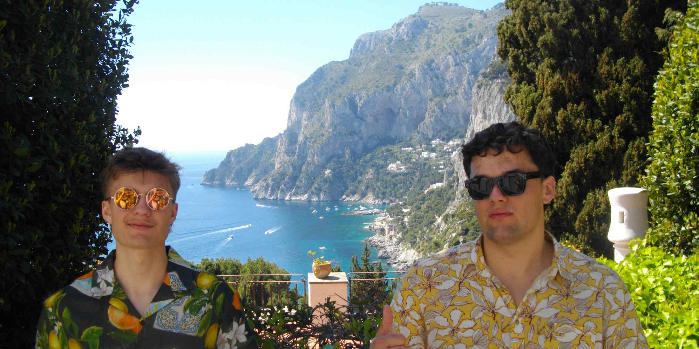

Vår Historie
Det hele begynte den dagen gutta skulle på byen og knuste liter på liter med sprit på metrogulvet.
Rundt 40 euro forsvant kanskje, men smaken som oppsto når sprittypene blandet seg på det skitne Rangueil metrogulvet, det er utgangspunktet for den smaksopplevelsen av en drink du blir servert i dag.

Dad lore, 2022, Toulouse, Frankrike. Bilde av Andreas N Holmsen © Andreas Holmsen / NoTail fotoavdeling
Fire gutter gikk inn på metroen for å komme seg til vors. De lo og tullet med hverandre, og holdt på en stor papirpose full av flasker med sprit.
Posen var tung og våt av kondens, men de merket ikke at den begynte å bli svakere.
En skulle gjennom sikkerhetsporten, men med et rykk falt posen i bakken. Flaskene knuste, og spriten spredte seg over gulvet, fylt med knust glass og sterk lukt. Folk i nærheten så oppgitt på de fire guttene som sto der med tomme hender og sjokkerte uttrykk. Skaden var tydelig: deres uhell hadde kostet omtrent 40 euro.
Som løsning gjorde de hva enhver guttegjeng ville gjort. De ryddet opp, og dro tilbake på butikken. Denne gangen med plastpose som de ingeniørstudentene de var. Dette er en av mange ganger de viste at det eneste som kreves er tålmodighet, øvelse og en god del lånekassenpenger.
Tilfeldighet? Neppe. En høyere makt satte oss på en ny sti. En sti fylt med drikke.

Business, 2022, Toulouse, Frankrike. Bilde av Andreas N Holmsen © Andreas Holmsen / NoTail fotoavdeling
Så begynte arbeidet for å gjøre smaken av metro-juicen udødliggjort gjennom en avrundet eksakt mengde av de beste råvarene og smakene i hele Frankrike. Vårt team har reist Europa rundt for å finne inspirasjon. Inspirerte kunder er kjøpeglade kunder.
Med nye smaker returnerte bartenderne, nå med et klart syn på hvordan 100 Tours skal være. De har tatt inspirasjon fra det kjente ordtaket "Man trenger ikke ha det gøy for å drikke alkohol", og det er veldig synlig i deres kunsteriske stil bak baren. En kunstner må leve kunsten sin, og en bartender må drikke drikken sin. Det ble fort en etablert praksis å ta en slurk av alle sine drinker før vi serverer dem: for å passe på at smaken er helt perfekt kalibert.
Men NoTail er større en to karer som er lidenskapelige for å drikke. Det handler om samhold, fellesskap, ideologi, politikk, matte, fysikk, kjemi, økonomi, ære, integritet, kunnskap og alt annet man ikke finner på BI.

Mad cash, 2023, Toulouse, Frankrike. Bilde av Andreas N Holmsen © Andreas Holmsen / NoTail fotoavdeling
Mye planlegging har gått inn i dette prosjektet. Nå gjenstår bare et spørsmål. Skal du la disse karene drikke opp drikken helt alene? Én ting er sikkert:
Disse karene har alltid noe å tilby som er godt å svelge.